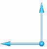
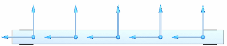
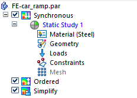
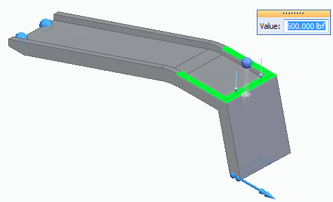
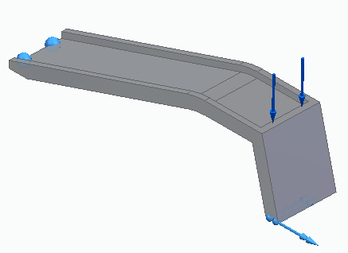
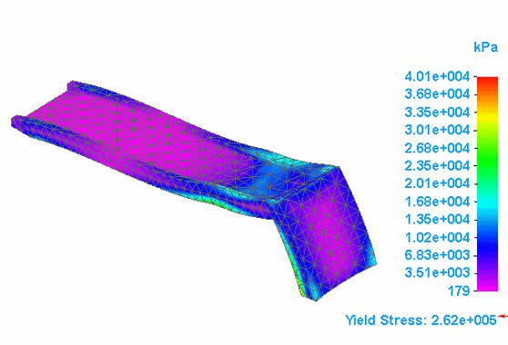

Tutorial: Simulate stress on a car ramp
Use linear static analysis to simulate the stresses and displacement of a car ramp. As a car is driven onto the car ramp, it is anticipated that the ramp can move slightly along the floor. Use a Sliding Along Surface constraint to replicate the sliding-along-a-surface condition.
The study parameters used in this tutorial are:
-
Study type=Linear Static
-
Load type=Force
-
Mesh type=Tetrahedral
-
Constraint type=Sliding Along Surface
Note:Constraint symbols indicate the degrees of freedom (DOF) of a model. The symbols are comprised of two shapes: a sphere and one or more arrows. Arrow symbols point in the direction the model is not constrained, with each arrow indicating one DOF.
Sliding Along Surface constraint symbol

By default, constrains only the direction normal to the surface.
Example:
-
Open the file FE_car_ramp.par.
Simulation models are delivered in the \Program Files\Siemens\Solid Edge 2023\Training\Simulation folder.
In the Simulation pane, notice that a linear static study was already created for this model.


-
Place a constraint to replicate sliding along the floor.
-
Select Simulation tab→Constraints group→Sliding Along Surface
 .Note:
.Note:-
When you choose the Sliding Along Surface constraint for a solid, the translation direction perpendicular to the face is constrained.
-
When you choose the Sliding Along Surface constraint for a thin-body part, the translation direction perpendicular to the face is constrained, as are the rotations out of the face. You can clear the Include Rotational DOF option on the Constraints command bar to allow rotation out of the face.
-
-
Rotate the view so you can see the underside of the ramp.
-
Zoom in on the right end and use QuickPick to select the bottom face.

-
Right-click in space to accept. Click to finish placing the constraint.

-
-
Reorient the view to Isometric by pressing Ctrl+I.
-
Place a fixed constraint.
-
Select Simulation tab→Constraints group→Fixed.

-
Zoom in on the left end of the ramp. Select the bottom face.

A preview of the fixed constraint appears on the face.

-
Right-click in space to accept. Click to finish placing the constraint.
-
-
Fit to view the entire part.

-
Define a force load.
-
Select Simulation tab→Structural Loads group→Force.

-
Select the top face and type 600 for the load. Press Tab.
-
Flip the direction so that it points downward.

-
Right-click in space to accept this force; click to finish.

-
-
Mesh and solve the study:
-
In the Simulation pane, turn off loads and constraints by clearing their respective check boxes.
-
Select the Mesh command, and then in the Tetrahedral Mesh dialog box, click Mesh & Solve.
After a few moments, the part is meshed and solved. The Simulation Results environment is displayed.

-
-
Close this file.